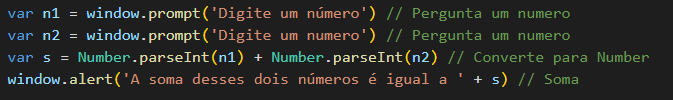

JavaScript
Variáveis e Tipos Primitivos
As variaveis são locais aonde ficam armazenados dados. Podendo ser números ou letras.
Cada variavel tem um identificador, porém os identificadores tem suas regras.
O comando para usar uma variavel é o comando var antes do identificador.
Os tipos primitivos podem ser: number, string, boolean, null, undefined, object e function.
Para saber se uma variavel é de certo tipo, usar o comando typeof.
Tratamento de Dados
Se o programador quiser mudar o tipo primitivo de string para number é preciso usar o comando Number.parseInt(x), para números inteiros, ou Number.parseFloat(x), para números reais.
A conversão de Number para string é feita pelo comando String(n) ou n.toString().
A formatação de numeros para mais casas decimais pode ser feita pelo comando n1.fixed(2), desse jeito o numero tera 2 casas decimais.
Para fazer com que numeros tenham a moeda do pais na frente é preciso digitar esse comando n1.toLocaleString ('pt-BR' , {style: 'currency', currency: 'BRL'}).
Podemos fazer tratamentos na string usando os comandos s.length, para contar quantas letras tem uma string, o comando s.toUpperCase(), para fazer todas as letras ficarem maiúsculas, e o s.toLowerCase() para letras minúsculas.
Template string
Para a criação de uma frase com dados que o proprio usuário colocou no site usamos o template string, para formatar strings, veja o exemplo:
`O aluno ${nome} com idade de ${idade} anos tirou uma nota ${nota}`
Repare que a frase esta com crase, na área que deve ter os dados do usuário tem o símbulo ${}.
Operadores
Aritimétricos
Os operadores aritimétricos são aqueles que ja estamos acostumandos a usar em todo período escolar. Porém os operadores no java script tem sinais diferentes. Veja a seguir:
A soma é feita pelo sinal +
A subtração é pelo sinal -
A divisão é pelo sinal /
A multiplicação é pelo sinal *
A potenciação pelo sinal **
O resto de divisão pela %
Relacionais
As operações relacionais são aquelas que relacionam uma coisa com outra, por exemplo, um numero maior e um numero menor. Veja a seguir:
Sinal de maior:
Sinal de menor:
Sinal de menor ou igual:
Sinal de maior ou igual:
Sinal de igual:
Sinal de idêntico:
Sinal de diferente:
Sinal de diferente identico:
<
>
<=
>=
==
===
!=
!===
Lógicos
Os operadores lógicos são distribuidos em negação, conjunção e disjunção. Esses operadores fazem com que algo seja ou não verdadeiro.
O operador de negação é o sinal !
O operador de conjunção é o sinal &&, que é um operador binário, no o portugues esse operador quer dizer ____ e _____.
O operador de Disjunção é o sinal ||, também é um operador binario e no português seria assim: ____ ou _____
Tercenários
Os operadores tercenarios tem três partes, a primeira, teste, a segunda, True, terceira, False. Ou seja sempre que o teste for verdadeiro acontecera algo e sempre que for falso o programa fará outra coisa. Veja a estrutura do operador:
Teste ?'__True__' : '__False__'